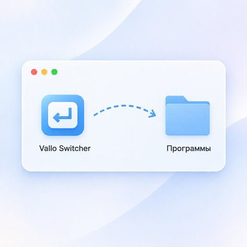
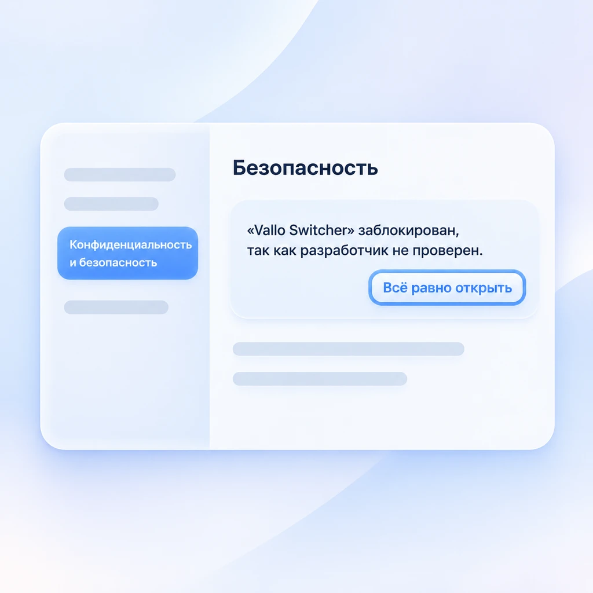
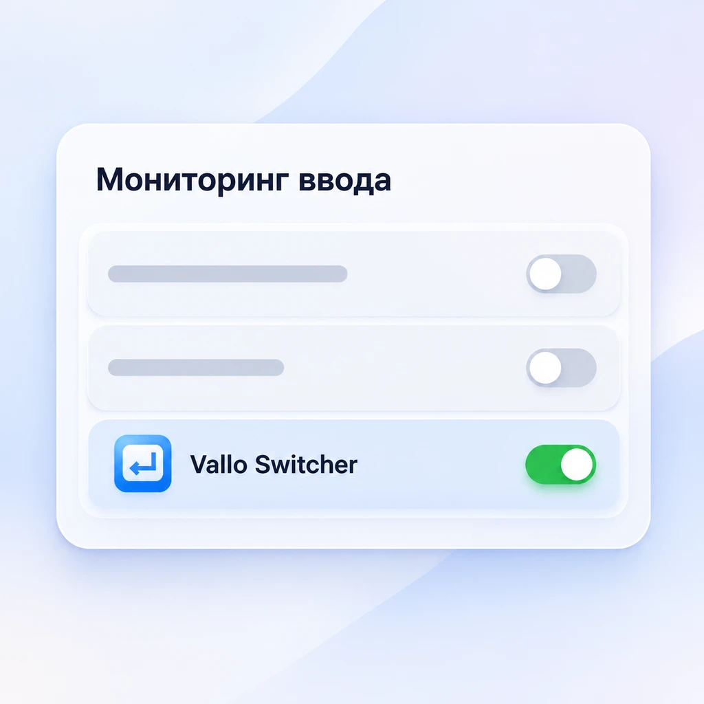

1
Перетащите в «Программы»
В окне диска перетащите значок Vallo Switcher на папку «Программы» рядом.

2
Разрешите первый запуск
Запустите Vallo Switcher из «Программ». macOS сообщит, что не может проверить разработчика, — это нормально для тестовой сборки. Нажмите «Готово», затем откройте:
Системные настройки → Конфиденциальность и безопасность
Внизу будет «Vallo Switcher заблокирован» — нажмите «Всё равно открыть» и подтвердите паролем. Это нужно один раз.

3
Дайте два разрешения
Vallo Switcher сам откроет окно с двумя шагами. В каждом нажмите «Открыть настройки» и включите переключатель у Vallo Switcher — шаг перелистнётся сам.
Конфиденциальность и безопасность → Универсальный доступ*
Конфиденциальность и безопасность → Мониторинг ввода
* В macOS 27 этот список называется «Управление устройством и доступ к данным». Пункт «Универсальный доступ» в левом столбце настроек — другой раздел.

Быстрый способ для тех, кто не боится Терминала (вместо шага 2)
После шага 1 откройте Терминал, вставьте команду и нажмите Return. Предупреждения о разработчике больше не будет.
xattr -dr com.apple.quarantine "/Applications/Vallo Switcher.app"
Команда снимает с приложения пометку «скачано из интернета», ничего больше она не делает.
Как пользоваться
Раскладка
| ghbdtn | привет — исправится само |
| jr + пробел | ок |
| левый Shift дважды | отменить исправление или перевести выделенный текст |
| отменили дважды | слово запомнится и больше не изменится |
Опечатки
| првет · приввет | привет |
| можеш · ктото | можешь · кто-то |
| фигма · хз · ща | не меняются |
| Backspace сразу | вернуть слово и запомнить |
Типографика
| Москва - столица | Москва — столица |
| "текст" | «текст» |
| 5x3 · ну... | 5×3 · ну… |
| Backspace сразу | отменить замену |
Правый Shift дважды
Выделите текст — исправятся опечатки, запятые и типографика сразу. Для запятых один раз скачайте модель: Настройки → «Опечатки» (228 МБ).
Настройки, исключения и свои сочетания клавиш — в иконке ↩ в строке меню. Кнопка ? в настройках открывает подробную справку.
Если что-то не так
Нет иконки в строке меню
Скорее всего, её спрятала выемка экрана: иконок много, и macOS прячет лишние. Закройте пару программ с иконками или зажмите ⌘ и перетащите стрелку ↩ правее, к часам. Vallo Switcher при этом работает.
Не получается найти нужный пункт в настройках
В Системных настройках есть поиск слева вверху — наберите «Мониторинг ввода» или «Универсальный доступ» (в macOS 27 — «Управление устройством»).
Разрешение включено, а Vallo Switcher не работает
Удалите Vallo Switcher из списка кнопкой «−», добавьте снова через «+» и включите. Так бывает после переустановки.
Исправления спорят друг с другом
Выключите автозамену macOS: Системные настройки → Клавиатура → Ввод текста → «Изменить…» → «Исправлять ошибки автоматически» и «Писать слова с прописной буквы автоматически». Если установлены Caramba или Punto Switcher, выключите их на время теста.
Исправлено то, что не нужно
Раскладку — левым Shift дважды сразу после исправления, опечатку или типографику — клавишей Backspace. Если Vallo Switcher мешает в каком-то приложении, добавьте его во вкладку «Исключения».